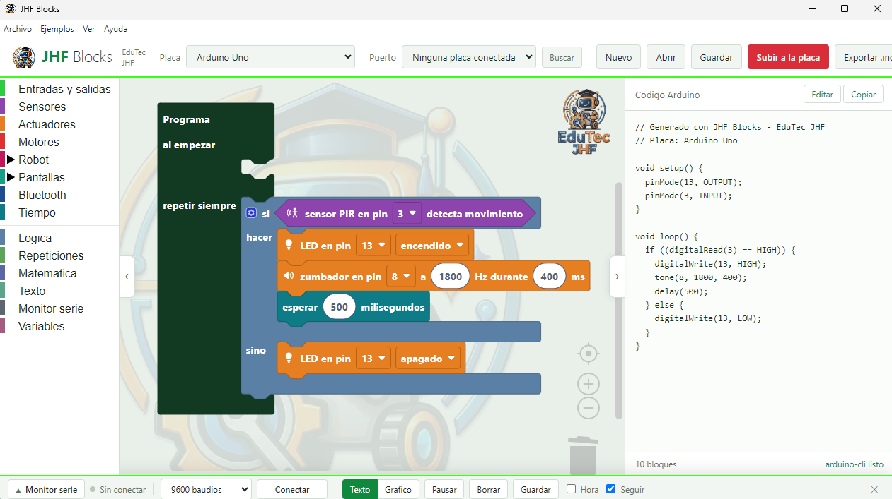

Hardware & Robótica
JHF Blocks
Entorno de programación por bloques para Arduino y electrónica educativa

Windows 64-bits (v1.12.0)
Instalador para Win 10 / 11
Windows 7 / 32-bits (v1.12.0)
Sistemas de 32 bits / Netbooks
Android APK (v1.12.0)
Celulares y tablets
Versiones Anteriores
Ver historial en GitHub
Aviso de instalación: Al abrir el instalador en Windows, puede aparecer el aviso "Windows protegió su PC". Hacé clic en Más información y luego en Ejecutar de todas formas.

Interfaz Principal de Bloques

Lectura de Sensores

Control de Motores y Salidas